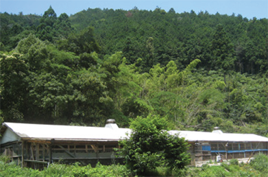
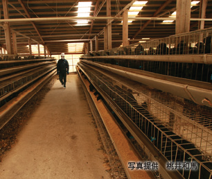
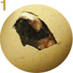
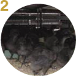
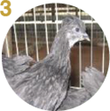
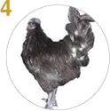
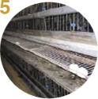
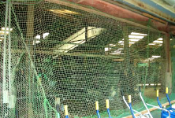
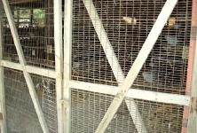
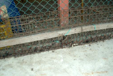

飼育環境のこだわり
東かがわ烏骨鶏専門ファーム

烏骨鶏の産地は、香川県東かがわ市に位置し、約4,500坪の恵まれた環境の中で、約16,000羽を飼育する世界最大急規模の烏骨鶏専門ファームです。開園から2７年で培ったノウハウにより毎日平均約2,200個の烏骨鶏卵が安定的に産卵され、月に最大3,500羽の孵化が可能です。
烏骨鶏の飼育に非常に重要な天然の「さわの水」が豊富に流れており、山里の谷間をロケーションとする理想的な「日照時間」という最適な飼育環境で烏骨鶏たちは暮らしています。
開園以来、鳥インフルエンザ等の大きな病気の被害もなく、新しい管理体制のもと孵化・産卵率も大きく向上してきています。
孵化から産卵まで
東かがわ烏骨鶏専門ファームでは、交尾から成鶏までの飼育を外注することなく全てを敷地内で行う、世界でも希少なファームです。飼育条件に最適の立地条件と最高の自然環境を生かし、純血種にこだわり『秘鳥』の伝説を27年間守り続けています。
-

孵化器（コンピューター制御により20日間で孵化）
-

育雛器（約1ヶ月）
-

中雛用鶏舎（生後2ヶ月～4ヶ月目）
-

成鶏（生後5ヶ月～6ヶ月目）
-

一般鶏舎（生後約6ヶ月目～） ※産卵スタート
鳥インフルエンザ対策
海外ルート
東かがわ烏骨鶏専門ファームでは、交尾から成鶏までの飼育を外注することなく全てを敷地内で行う、世界でも希少なファームです。飼育条件に最適の立地条件と最高の自然環境を生かし、純血種にこだわり『秘鳥』の伝説を27年間守り続けています。
輸入鳥類を介して侵入するルート
国内外に係わらず外部から烏骨鶏は当ファームに入れておりません。
渡り鳥を介して侵入するルート
下写真のように、全鶏舎全体に目の密な野鳥進入防御用ネットを張っているため、鶏舎内に野鳥は侵入しません。
-

鶏舎側面部
-

鶏舎出入口部
-

鶏舎側面・入口下部
海外の発生国から肉や卵を輸入することによって侵入するルート
国内外に係わらず外部からの肉や卵の輸入は行っておりません。
海外の発生地からヒトが持ち込むルート
生産管理者の視察等の事由による海外出張は行っておりません。
農園内
１．農園及び鶏舎内の入場制限
農園及び鶏舎内には関係者以外入らないよう入場制限をしています。保健所による定期的検査などで関係者以外が入園する際には、入場者リスト表への記入を義務付けし、必ず専用の衣服と靴に替えます。
2．生産管理者の鶏舎への入場
必ず手足を消毒してから入ります。
3.農園及び鶏舎内の清掃・消毒・殺菌
消毒班を設置し、毎日ローテーションを組んで、マニュアル化されたチェックリストを用いて清掃・消毒・殺菌をします。